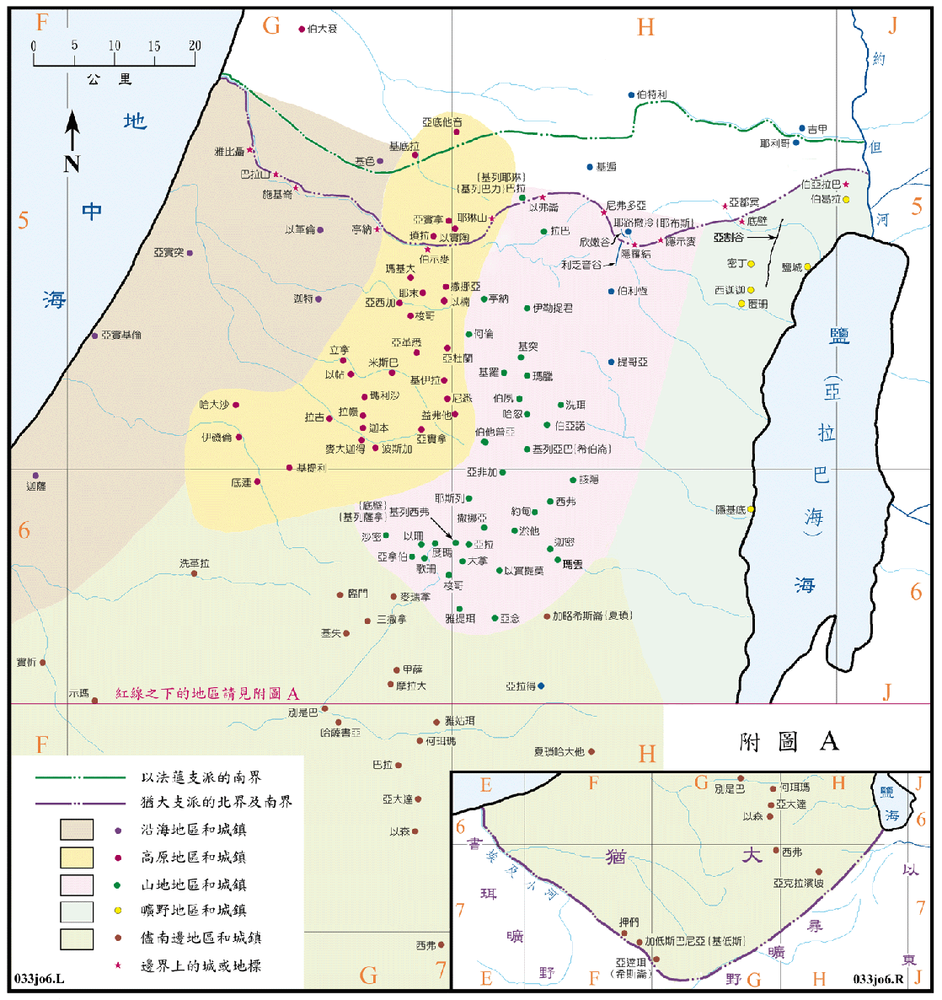

| 圣经 | 说明 |
|---|---|
| 书14:13-15，15:13-19 | 分地给迦勒。 |
| 书15:1-4 | 犹大支派的南界。 |
| 书15:5 | 犹大支派的东界。 |
| 书15:5-11 | 犹大支派的北界。 |
| 书15:12 | 犹大支派的西界。 |
| 书15:21-32 | 尽南边的城邑。 |
| 书15:33-44 | 高原的城邑。 |
| 书15:45-47 | 靠海之地。 |
| 书15:48-60 | 山地的城邑。 |
| 书15:60-62 | 旷野之城邑。 |
| 书15:63 | 耶路撒冷城属犹大支派，但未赶出耶布斯人。 |
此次分地是在吉甲举行，但除了河东的两个半支派之外，只分给了犹大、以法莲和玛拿西等两个半支派，犹大在南，另两者在北，但在犹大和以法莲之间，尚有部份空地并未划分。
犹大支派所分得之地最多，不但有明显的边界，也有城市的名单，而且将所有的城邑分区分组，计有南区、高原、沿海地区、山地和旷野，都与自然地区相符，可作分区之参考。只是在北方有一些所分得的城邑，其位置已超出了北方的边界，而且在日后分地时，再度分给了其他的支派，如以实陶、琐拉、亚实拿、基底拉、伯大衮、以革伦等都给了但支派，甚至亚底他音城是在以法莲的地业之内。东北角上的伯亚拉巴、伯曷拉和耶路撒冷等三个城，日后则改属便雅悯支派。在下次分地时，又将尽南地区中的大部份城邑给了西缅支派。所以犹大支派地业的真正和正确的疆域，要待下一次在示罗举行的分地时，才能作最后的确定，请参看<书图11>。